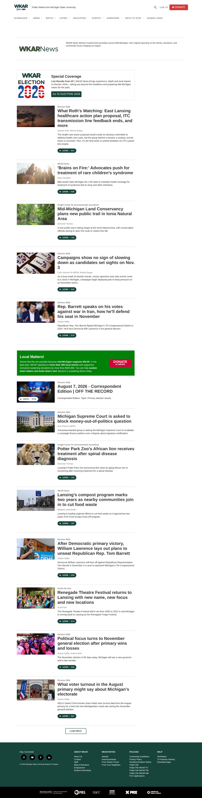

Growth that held, not a single spike
The floor moved.
WKAR had a strong newsroom and an underserved digital front door. I introduced digital analytics to editorial planning, brought the digital team into newsroom decisions and made the full staff part of the digital process. We strengthened search and metadata, then put reporting into new topic and community conversations—including relevant Reddit and Facebook groups. During that transformation, daily-average active users roughly doubled, and the monthly floor rose well above the previous high.
A peak is a news cycle. A floor is a habit. The floor is the number I watch.
I moved analytics and the digital team into editorial planning, made the staff part of publishing, strengthened search and metadata, and brought our work into relevant Reddit, Facebook and local community conversations. The growth inflection follows that shift: daily-average active users rose 101.6%.
+101.6%
Daily-average active users, Jan 1 2025 to Jul 31 2026, against the prior 577 days
≈ 3×
Recent monthly active users versus NPR Studio’s typical-station benchmark
Google Analytics via NPR Studio. The chart marks my June 2025 arrival; the digital-first editorial and distribution shift began immediately, and the growth inflection follows. The chart shows correlation, not single-channel causation. The durable result is the plateau underneath the August news-cycle peak: five straight months above 129,000, and a floor since then of 64,368 against a previous high of 46,967.
The numbers
The same site, a year on.
Previous high
46,967
March 2025, the previous high
Lowest month since
64,368
March 2026, still 37% above that high
Peak
142,739
August 2025, five straight months above 129,000
Peer comparison
≈ 3×
Recent monthly users versus NPR Studio’s typical-station benchmark

The operating method
How the work changed.
01 · Analytics enters editorial
Analytics stopped being a management document. I teach the staff to see what audiences choose, where they find it and what they ignore—and use that evidence before the next assignment.
02 · Choose the platform
Every story gets an intentional platform plan. We decide what belongs on web, radio and social—and whether it serves Sunday’s Signal, Wednesday’s Signal+ or both.
03 · Work the content calendar
A shared calendar sequences digital publication, radio air, newsletter placement, social distribution and follow-up. Timing is part of the story strategy, aimed at maximum useful exposure.
04 · Go where people are
We place relevant work in topic, local and social communities—including Reddit and Facebook conversations—so distribution reaches beyond the station’s existing followers.
05 · Build depth every day
We made in-depth reporting a standing commitment and pushed past the headline every day, not only for occasional special projects.
06 · Put names on expertise
Bylines, faces, beats and recurring conversations moved to the front so audiences could recognize the journalists and expertise behind the work.
A peak is a news cycle. A floor is a habit.